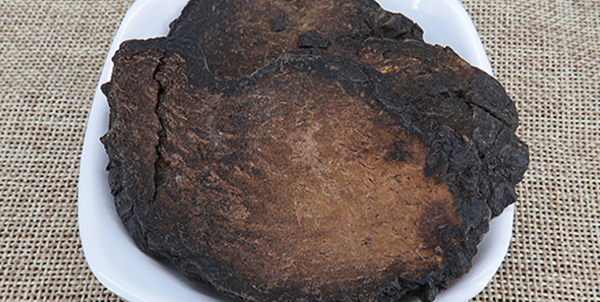
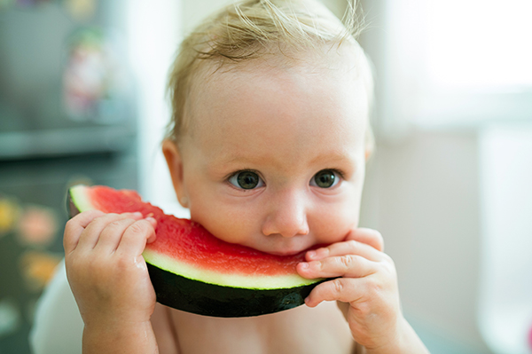
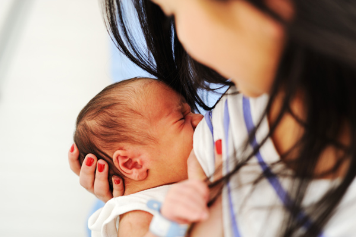

原文连接:https://www.daquan.com/post/10938.html
肉苁蓉有着补肾壮阳的功效，不仅是适合男性滋补的养身药材，女性吃了也能调理经期治疗不孕不育。肉苁蓉虽然是一味非常珍贵滋养身体的药材，但是肉苁蓉的副作用也有不少，所以要符合自身体质的同时，适量适度食用，如果用量过多或者体质不同补药也会变成毒药的。
肉苁蓉的副作用
1、补阳耗阴

肉苁蓉图片
阴虚火旺的不能食用肉苁蓉，因为肉苁蓉是一个补阳的药物，虽然温补不伤阴，但是本身就阴虚火旺的，火气旺盛，阴有不足，这种情况再服用肉苁蓉会导致伤阴更甚。
2、过量伤胃
服用过量还有肠胃本身就不好的最好不要服用肉苁蓉，肉苁蓉是温补的药材服用过量会导致胃火大，会引起口臭，牙龈肿大，口舌生疮。
3、导致便秘
肉苁蓉虽然有润肠通便的功效但是肉苁蓉是温补的药材，虚寒导致的便秘可以使用，但是因为素体火旺导致肠胃水分少大便干结的就不能使用了，会导致便秘更严重。
4、导致甲状腺问题

肉苁蓉中有硫代葡萄糖甙，生活中有很多带碘的食物，食盐现在都是加碘食盐，硫代葡萄糖甙和碘结合会导致甲状腺肿大，本身有甲状腺问题的就不能食用，正常的朋友就要适量食用。
不宜食用肉苁蓉的人群
1、幼儿不能食用

小孩子先天之精充盈，不宜食用肉苁蓉这种补肾阳的药物，幼儿服用容易造成孩子口舌生疮并且大便干结，甚至会引起早熟以及激素疾病。
2、未成年少年不能食用
未成年人虽然生长发育基本完成，但是其心智还没发育完成，并且处于一种年轻气盛的阶段。肉苁蓉是壮阳的药材，未成年人食用容易导致性欲强，控制不住，分神等问题。
3、哺乳期间不能食用

肉苁蓉是一味非常好的滋补身体的药材，但是哺乳期时最好不要食用，哺乳期妈妈吃的食物会变成乳汁给孩子食用，肉苁蓉并没研究表明对婴幼儿无害。
结语：通过上文的介绍，相信大家都知道了肉苁蓉的副作用，和不宜食用肉苁蓉的人群，希望大家能在生活中食用适量的肉苁蓉来滋补身体。
推荐阅读：